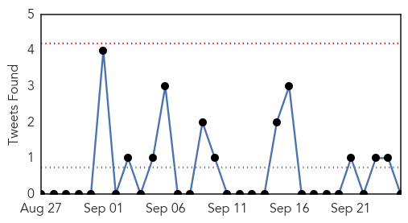

Dengue Fever
30-Day Web Trend
30-Day Twitter Trend
3 alerts, 0 warnings

Article Locations


Article Confidences
Top Articles:
- 0.997
- Dengue fever cases going up in Cavite
- 0.996
- Dengue surveillance poor in India
- 0.993
- Health dept collects 53 fresh samples
- 0.988
- Dengue: 4 more test positive in Jammu, total cases 17
- 0.988
- Dengue ails 23,000
- 0.985
- Slow & sloppy civic response to dengue
- 0.982
- Boy Dies Of Dengue In Kolkata
- 0.974
- Nearly 250 cases of Dengue in last two months, most from Kolkata; KMC sets up 16 health camps
- 0.971
- Taiwan suffers deadliest-ever dengue outbreak, with record high of 42 people dead, news, Health News, AsiaOne YourHealth
- 0.970
- Dengue toll rises in Taiwan
- 0.970
- Dengue claims more lives
- 0.970
- Taiwan sees dengue record smashed, more than 16,000 cases reported in 2015
- 0.961
- Dengue: 4 more test positive in Jammu, total cases 17
- 0.958
- Nadda claims adequate arrangements in place to tackle dengue cases
- 0.956
- Dengue challenges India's health system
- 0.920
- Number of dengue fever cases ...｜Society｜WCT
- 0.907
- Philstar Mobile
- 0.905
- Amid Delhi's Dengue Outbreak, How Medical Students Are Helping Out
- 0.889
- Coal town army steps up sting fight
- 0.867
- Dengue victims to get ample blood supply –Red Cross
- 0.863
- Bollywood studios breeding grounds for dengue: BMC
- 0.837
- Zamboanga Today Online, the most read newspaper in Zamboanga City
- 0.832
- There will be blood for dengue victims
- 0.821
- Dengue menace in Delhi--Municipal corporation blames the lack of funds for their failure
- 0.755
- YMCA Faridabad authorities wake up to dengue menace
- 0.751
- Health minister Kim Hames launches Mandurah mosquito campaign
- 0.736
- Untitled Article
- 0.713
- PRC assures there’s enough blood for dengue victims
- 0.641
- Delhi health minister visits hospitals to check dengue arrangements
- 0.630
- Anil Kapoor, Jeetendra, Juhi Chawla face fine for hosting breeding spots
- 0.607
- Gordon: There’s enough blood for dengue victims
- 0.562
- Mumbai: Family goes on rampage, beats up doctors after infant dies of dengue
Top Tweets:
-
No tweets found for Sep 25, 2015
Unknown
30-Day Web Trend
0 alerts, 0 warnings

30-Day Twitter Trend
0 alerts, 0 warnings

Article Locations


Article Confidences

Top Articles:
- 0.994
- CDC Says Flu Vaccine Should Be More Effective This Season : Shots – Health News : NPR
- 0.991
- Saudi Arabia releases updated MERS statistics
- 0.962
- Health Officials Send E. Coli Warning
- 0.958
- South Korea calls for tighter monitoring against MERS
- 0.906
- Officials Concerned Over Increase Of HIV Cases In Kandahar
- 0.884
- Bali rabies outbreak different, says veterinary department
- 0.843
- New clues on the history of the smallpox vaccine virus
- 0.824
- Researchers are Working on Vaccine for Severe Viral Brain Infection
- 0.820
- MSF Refused Permission to Work in Lugansk
- 0.808
- Health officials urge precautions as Shigella cases on the rise in Kansas City, Missouri
- 0.807
- HEALTH WORKERS AVERTED MAJOR OUTBREAK OF CHICKEN POX AT MT. GAY HOSPITAL
- 0.797
- WA Government launches new campaign to tackle mosquito threat
- 0.795
- Bluetongue Virus Confirmed in White-Tailed Deer in Eastern Washington
- 0.773
- UN agency says aid organisations are reporting increase of people with Kala Azar in Somalia
- 0.764
- Shingles vaccine available for 70 and 78 year olds
- 0.760
- Fig & Olive DC Salmonella Outbreak Includes Cases From MD, PA, VA, IL & AL
- 0.749
- Syria UN health agency urges donors to assist countries doing the heavy lifting
- 0.742
- Rabies in Malawi: A mother’s first-hand account
- 0.740
- A dozen lawsuits pending in cucumber salmonella outbreak
- 0.725
- Fig & Olive's West Hollywood Location Linked to Salmonella (UPDATED)
- 0.722
- Idiopathic pulmonary fibrosis in BRIC countries: the cases of Brazil, Russia, India, and China
- 0.708
- WA Government launches new campaign to tackle mosquito threat
- 0.690
- Bed Sores Lead List of Complications in Indiana Hospitals
- 0.672
- Polio is Gone From Nigeria, WHO Says
- 0.662
- Malaria Under Control
- 0.636
- Do not panic, take precautions; indiscriminate culling not the answer — Christine Chin
- 0.633
- Pennsylvania hospitals have made measurable progress in fighting preventable infections
- 0.625
- Continuing Promise 2015 Partners with Cuban Medical Delegation in Haiti
- 0.617
- Ukraine: MSF refused permission to work in Lugansk, leaving vulnerable people deprived of essential healthcare and medicines
- 0.597
- WI woman urging people to get flu shot after near-death experience
- 0.592
- Cucumber Contaminated With Salmonella Poona Prompted the Food Poisoning Lawyers to Expand Efforts to Help Victims of Cucumber Food Poisoning
- 0.572
- Odisha breaking news, Latest Odisha news,Odisha Headlines, Odisha latest online news, Odia news paper, Odisha epaper
- 0.559
- Tipping Point: Will Latinos Follow Pope Francis’s Lead on the Environment?
- 0.556
- Ukraine: MSF refused permission to work in Lugansk
- 0.535
- Flu “Shoot-Out” planned for Washington County
- 0.535
- Ukraine: MSF is refused permission to work in Lugansk, depriving people of essential healthcare
- 0.523
- New CDC Zimbabwe Head Advocates For Increased Efforts Towards Elimination Of HIV
- 0.522
- Herpes vaccine shows promise with prophylactic and the therapeutic efficacy in study
- 0.517
- 14 Indians, one Odia injured in stampede during Hajj at Mina, Odisha Current News, Odisha Latest Headlines
- 0.515
- South Dakota livestock battling two blister diseases; but not FMD
- 0.511
- New CDC Zimbabwe head advocates for increased efforts towards elimination of HIV
Top Tweets:
-
No tweets found for Sep 25, 2015